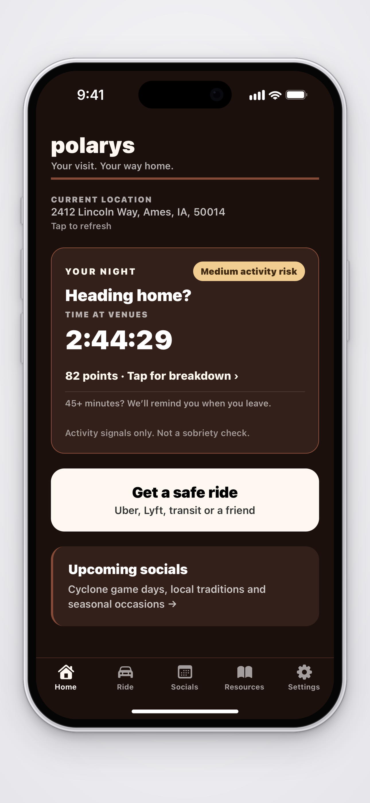

A reminder when you leave
Spend 45+ minutes at bars, clubs, nightclubs, or a saved house-party address between 9 PM and 5 AM. When Polarys detects you leaving, it sends “How are you getting home?” Tap to check your options.

Going out tonight? Polarys keeps track of time at bars and places you save. When you leave after 45+ minutes between 9 PM and 5 AM, it can remind you to sort out a ride home.

Save your home address and the places you go. Allow Always location, Precise Location, and notifications.
set this up before you head outPolarys watches for visits at night. Bars and saved party addresses count toward the same session.
9 pm–5 am, local timeLeaving after 45+ venue minutes can trigger a ride reminder. You can always open ride options yourself.
have a plan before getting in the carHere’s what Polarys does when you’re out.
Spend 45+ minutes at bars, clubs, nightclubs, or a saved house-party address between 9 PM and 5 AM. When Polarys detects you leaving, it sends “How are you getting home?” Tap to check your options.
First, it asks whether you’re planning to drive or need a ride.
If you choose “I was planning to drive,” these are your options:
Your answer isn’t saved. Every answer leads to ride options. Choose “Find a ride home” to go straight there.
Add your home address in Settings. Polarys automatically sets it as your destination when you open Uber or Lyft through the app. You can also check transit or text a friend.

You know that friend who always hosts? Save their address in Settings. Polarys can watch that place the same way it watches a bar.
Add up to 10 places, give them nicknames, and remove them whenever you want. The same 9 PM–5 AM window and 45-minute departure rule apply. Your saved home is separate: getting home ends your night.
Saved places stay on your phone until you remove them. Address lookup uses Google or your device’s location service.
Shadman’s spent over 45 minutes at a bar. He heads to his car, gets in, and his phone connects to Bluetooth. Polarys detects his saved car and puts those two things together: time at the bar, then a car connection. His activity risk score goes up, and Polarys encourages him to choose another way home—Uber, Lyft, public transit, or a friend. Before he drives off, he has other options right there.
That score doesn’t measure sobriety. Save your car in Settings; keep Polarys open or use a car Shortcut for detection.
The home screen shows your current venue and time spent there. Low, Medium, and High reflect venue time and a qualifying saved-car connection. They don’t measure alcohol or tell you whether you’re safe to drive. Time spent traveling doesn’t add points.
Save a friend’s address and use the same departure reminders as bars.
Open the Ride tab whenever you need it. You don’t have to wait for a notification.
Find general next steps and links to help if you or a friend needs them.
Find state-specific information and links to official sources. It isn’t legal advice.
Save your car’s Bluetooth connection here. “Add a car Shortcut” walks you through opening Polarys when your phone connects to the car.

The Socials tab lists Iowa State games and other occasions, with a link to find a ride.

Anay Shah — Iowa State University
I’m an Iowa State student building Polarys. The idea is pretty simple: getting home should be part of the plan, even when the rest of the night wasn’t planned at all.
The name comes from Polaris, the North Star. I liked the idea of something that helps you find your way home. I’m testing the iPhone app with friends and working through what’s useful on an actual night out.
The Polarys beta is ready to try on iPhone. Get it through TestFlight and let me know how it works on your next night out.
Reminders depend on phone permissions, GPS, and iOS. They can arrive late or fail to arrive, so make a plan before you leave. Polarys can’t tell you whether you’re sober or safe to drive.